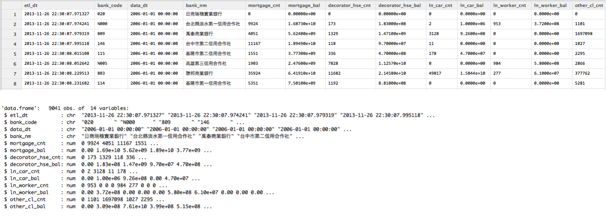
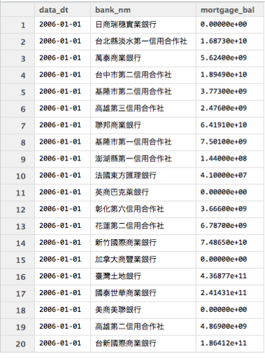
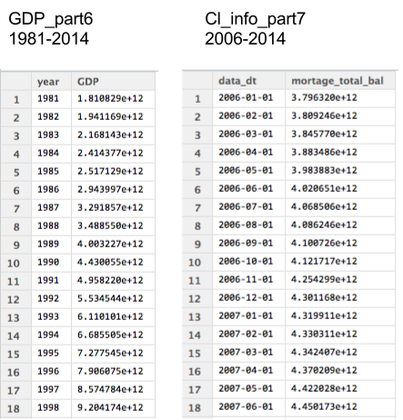
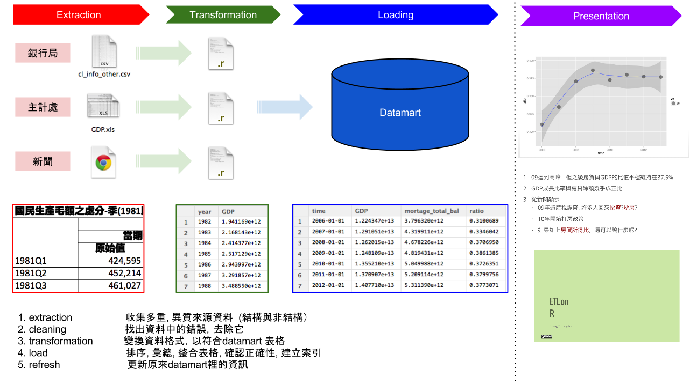

房價真的太高了嗎?

Cheng Yu Lin (aha) and Jia Wei Chen (jiawei)
房價真的太高了嗎?
大熊被抓了
台灣房市真的要崩盤了嗎？
在論述台灣房市之前，身為一個
資料科學家，第一步是了解問題
本次，我們的問題是
房價真的太高了嗎?
還記得這個新聞吧？ 就從這裡開始
從上面新聞所述，所以我們想要:
從上面新聞所述，所以我們想要:
你想知道什麼資料?從上面新聞所述，所以我們想要:
你想知道什麼資料?可能的來源?即便知道資料在哪，可是資料還是如同
一盤散沙
即便知道資料在哪，可是資料還是如同
一盤散沙
ETL

ETL
結構化資料 STEP1 房貸餘額1 , STEP2 GDP非結構化資料 STEP3新聞分析 等等 先安裝幾個建議的套件
dplyr 可用類似SQL語法操作data fromexts 處理時間格式好用的套件gdata 可以處理Excel 2007以上的文件install.packages("dplyr")
install.packages("xts")
install.packages("gdata")
好! 開始動手做吧!
請連線到
https://survey.banking.gov.tw/statis/stmain.jsp?sys=100&funid=r100
cl_info_other.csv至少要記得的 read.table
DF = read.table(file='檔案路徑',sep=",",stringsAsFactors=F,header=T)
Data Frame,做分割True, 會讓讀入的字串都用Factor形態儲存，那麼資料就會轉為整數儲存與額外的對照表False，表示第一行是不是表格標頭，作為輸出的dataframe欄位名的colnamesView(Cl_info)
str(Cl_info)

直接讀入是否覺得怪怪的?
library(dplyr)
##
## Attaching package: 'dplyr'
##
## The following objects are masked from 'package:xts':
##
## first, last
##
## The following objects are masked from 'package:stats':
##
## filter, lag
##
## The following objects are masked from 'package:base':
##
## intersect, setdiff, setequal, union
Cl_info = read.table(file='./cl_info_other.csv',header=T,sep=",",stringsAsFactors=F)
Cl_info_part = mutate(Cl_info,data_dt = as.POSIXct(data_dt),
bank_code = as.factor(bank_code),etl_dt = as.POSIXct(etl_dt))
View(Cl_info)
Extraction與Transformation了！看見資料了!但是剛剛處理過程中的
mutate是什麼?
看見資料了!但是剛剛處理過程中的
mutate是什麼?
在
R中用來做資料清理與資料處理好用的套件dplyr其中之一的函式
欄位(1/2)select 函式，用來挑選欄位Cl_demo1 = select(資料表,欄位1,欄位2,欄位3)
第一個參數為輸入的data frame後續參數為選取的欄位名稱SQL的使用者select data_dt,bank_nm,mortgage_bal from Cl_info;

欄位(2/2)select 函式，用來挑選欄位Cl_demo1 = select(Cl_info,data_dt,bank_nm,mortgage_bal)
第一個參數為輸入的data frame後續參數為選取的欄位名稱SQL的使用者select data_dt,bank_nm,mortgage_bal from Cl_info;
資料filter 函式，用來保留要留下的資料列Cl_demo2 = filter(Cl_info,mortgage_bal>1000000)
第一個參數為輸入的data frame第二個參數為邏輯運算式，可用data frame裡的欄位，當結果為True時，該筆資料列保留SQL的使用者select * from Cl_info where mortgage>1000000;

特徵欄位(1/3)mutate 用來增加非彙總計算欄位Cl_demo3 = mutate(資料表,新欄位名 = 運算式)
第一個參數為輸入的 data frame第二參數為計算式，也可以用來當做轉換資料形態，變更欄位為名稱使用SQL的使用者select mortgage_bal/1000000 as mortage from Cl_info;

特徵欄位(2/3)mutate 用來增加非彙總計算欄位Cl_demo3 = mutate(Cl_info,mortage = mortgage_bal/1000000)
第一個參數為輸入的 data frame第二參數為計算式，也可以用來當做轉換資料形態，變更欄位為名稱使用SQL的使用者select mmortgage_bal/1000000 as mortage from Cl_info;
特徵欄位(3/3)Cl_info_part2 = mutate(Cl_info_part,time= as.POSIXct(data_dt))
排序資料(1/2)arrange 用來重新排序Cl_demo4 = arrange(資料表,欄位1,desc(欄位2)))
第一個參數為輸入的 data frame後續參數為排序用欄位，預設遞增，可以透過desc()變成遞減排序SQL的使用者select * from Cl_info order by mortage,data_dt desc ;

排序資料(2/2)arrange 用來重新排序Cl_demo4 = arrange(Cl_info,mortgage_bal,desc(data_dt))
第一個參數為輸入的 data frame後續參數為排序用欄位，預設遞增，可以透過desc()變成遞減排序SQL的使用者select * from Cl_info order by mortage,data_dt desc ;
讓我們來練習抓下一個資料
GDP
請連線到 http://ebas1.ebas.gov.tw/pxweb/Dialog/NI.asp
國民生產毛額之處分RStudio 開始處理資料練習讀入與創建一個
GDP的 data frame
答案
GDP = read.table(file='檔案位置',sep=",",stringsAsFactors=F,header=F)
答案
GDP = read.table(file='檔案位置',sep=",",stringsAsFactors=F,header=F)
輸入
View(GDP)觀察GDP會發現怎麼前後有很多列的資料是不要的

整理好這個data frome不相干的資料列百萬元變成元,去除年份與季
GDP_part = GDP[5:137,]
colnames(GDP_part) = c("time","GDP","GDP_yoy","GDP_2006","GDP_2006_yoy",
"GDP_minus","GDP_minus_yoy")

# 去除中間不合理的,在數字欄位上與補上百萬
GDP_part2= mutate(GDP_part,GDP = as.numeric(gsub(",", "",GDP))*1000000)
gsub, 替換字元，將原先有問題的,去除as.numeric 將原來的文字形態改成數字
GDP_part3 = mutate(GDP_part2,year=as.numeric(substr(time,0,4)),
season=as.numeric(substr(time,6,6)))
GDP_part4 = select(GDP_part3,year,season,GDP)
substr, 取出特定位置的資料as.numeric, 將文字轉成數字
擁有了
GDP和房貸餘額，那接下來呢?

非結構化的新聞與股市資料!
require(RSelenium)
require(stringr)
require(xts)
require(reshape2)


<a href = "www.stat.berkeley.edu">
Statistics Website
</a>
nodename : a
attribute : href with value "www.stat.berkeley.edu"
text: "Statistics Website"
pJS <- phantom()
Sys.sleep(5) # give the binary a moment
remDr <- remoteDriver(browserName = 'phantomjs')
remDr$open()
url <- 'https://tw.news.yahoo.com/real-estate/archive/1.html'
remDr$navigate(url)
doc <- remDr$findElements("xpath", "//ul/li/div/div/h4/a")
titles <- sapply(doc, function(doc){
doc$getElementText()})
title <- list()
for(i in 1:10){
url <- sprintf('https://tw.news.yahoo.com/real-estate/archive/%d.html', i)
remDr$navigate(url)
doc <- remDr$findElements("xpath", "//ul/li/div/div/h4/a")
tmp <- sapply(doc, function(doc){
doc$getElementText()})
title <- append(title, tmp)
}
remDr$navigate("https://tw.yahoo.com/")
webElem <- remDr$findElement(using = "id", "p")
webElem$sendKeysToElement(list("房價", key = "enter"))
search_title <- list()
for(i in 1:10){
webElems <- remDr$findElements(using = "xpath", ____ )
resHeaders <- unlist(lapply(webElems, function(x){x$getElementText()}))
search_title <- append(search_title, resHeaders)
webElems <- remDr$findElement(using = "id", value = ____ )
webElems$clickElement()
}
"//li/div/div/h3/a"
"pg-next"
doc <- do.call(rbind, title)
writeLines(doc, "news_yahoo.txt")
news_yahoo <- readLines('news_yahoo.txt')
setwd('~/R_ETL')
hourse_news <- readLines('jiawei/news.txt')
## Warning: incomplete final line found on 'jiawei/news.txt'
head(hourse_news)
## [1] "2014-06-24富邦人壽信義區再插旗 A25案172億元奪標"
## [2] "2014-06-24北市A25地上權案 富邦權利金172.88億元得標"
## [3] "2014-06-23房市管制 央行將化明為暗"
## [4] "2014-06-20史上頭一遭!大直新地王 1坪212萬＃超越信義之星直逼帝寶 中山新天價"
## [5] "2014-06-20大直帝景水花園實價首破200萬 北市3大豪宅板塊確立"
## [6] "2014-06-19樺福千金捷運宅標脫率89.4% 均價63萬元屬合理範圍"
x <- c("apples * 14", "flour", "sugar * 100", "milk * 3")
str_extract(x, "\\d{2}")
## [1] "14" NA "10" NA
str_extract(x, "\\d{2,3}")
## [1] "14" NA "100" NA
str_extract(x, "[ap]+")
## [1] "app" NA "a" NA
str_extract(x, "[ap]{1,4}")
## [1] "app" NA "a" NA
str_extract(x, "a[elp]+s")
## [1] "apples" NA NA NA
x <-"2014-06-24富邦人壽信義區再插旗 A25案172億元奪標"
patten <- "(\\d{4}-\\d{2}-\\d{2}).+(信義.?).+"
gsub(patten, "\\1, \\2", x)
## [1] "2014-06-24, 信義區"
請填入適當的 Patten
dates <- str_extract(hourse_news, ___)
titles <- str_replace(hourse_news, ___, ___)
hourse_news <- cbind(dates, titles)
## dates titles
## [1,] "2014-06-24" "富邦人壽信義區再插旗 A25案172億元奪標"
## [2,] "2014-06-24" "北市A25地上權案 富邦權利金172.88億元得標"
## [3,] "2014-06-23" "房市管制 央行將化明為暗"
str_replace_all(piece, "[[:punct:]]", "")
str_replace_all(piece, "[[:blank:]]", "")
punctuation <- "\u3002 \uff1b \uff0c \uff1a \u201c \u201d \uff08 \uff09 \u3001 \uff1f \u300a \u300b"
punctuation
## [1] "。 ； ， ： “ ” （ ） 、 ？ 《 》"
str_replace_all(piece, punctuation, "")
substr('富邦人壽信義區再插旗 A25案172億元奪標', 1, 4)
## [1] "富邦人壽"
substr('富邦人壽信義區再插旗 A25案172億元奪標', 5, 7)
## [1] "信義區"
ngram <- function(sentence, n){
chunk <- c()
for(i in 1 : (nchar(sentence)-n+1)){
chunk <- append(chunk, substr(sentence, ___ , i+n-1))
}
return(chunk)
}
ngram('富邦人壽信義區再插旗', 2)
## [1] "富邦" "邦人" "人壽" "壽信" "信義" "義區" "區再" "再插" "插旗"
segmentWord <- function(word){
n <- nchar(word)-1
seg <- lapply(1: n, function(i){
w1 <- substr(word, 1, i)
w2 <- substr(word, ___ , n+1)
c(w1,w2)
})
return(seg)
}
segmentWord('富邦銀')
## [[1]]
## [1] "富" "邦銀"
##
## [[2]]
## [1] "富邦" "銀"
titles <- gsub("\\s", "", titles)
piece <- list()
piece[['1']] <- unlist(sapply(titles, ngram, 1, USE.NAMES = FALSE))
piece[['2']] <- unlist(sapply(titles, ngram, 2, USE.NAMES = FALSE))
piece[['3']] <- unlist(sapply(titles, ngram, 3, USE.NAMES = FALSE))
piece[['4']] <- unlist(sapply(titles, ngram, 4, USE.NAMES = FALSE))
piece[['5']] <- unlist(sapply(titles, ngram, 5, USE.NAMES = FALSE))
piece[['6']] <- unlist(sapply(titles, ngram, 6, USE.NAMES = FALSE))
words_freq <- table(unlist(piece))
##
## 信義區 北市 房價 房市 上漲
## 8 81 38 33 2
N <- sum(words_freq[piece[['1']]])
words_prob <- words_freq / N
##
## 龍江 龍江路 龍江路土 龍江路土地 龍江路土地由
## 4.155e-06 4.155e-06 4.155e-06 4.155e-06 4.155e-06
paste("富邦" ,"人壽", sep='')
## [1] "富邦人壽"
grep('富邦' , c('富邦金', '法人富邦', '台北富邦銀行'))
## [1] 1 2 3
grep('^富邦' , c('富邦金', '法人富邦', '台北富邦銀行'))
## [1] 1
grep('富邦$' , c('富邦金', '法人富邦', '台北富邦銀行'))
## [1] 2
word <- '信義區'
BASE <- piece[[as.character(nchar(word)+1)]]
PATTEN1 <- paste( __ , __, sep = __ )
matchs1 <- grep( __ , __ , value = TRUE)
PATTEN2 <- paste( __ , __ , sep = __ )
matchs2 <- grep( __ , __ , value = TRUE)
words_2_5 <- unique(unlist(piece[ ___ ]))
## [1] "護區、陽" "產實價" "約、東京貴" "購族青" "下會期"
## [6] "淡水最" "一LLG「" "航空城國" "度增98%" "宅新高價"
## [11] "減17" "吃不喝2" "03" "、2個人" "-22北"

practice <- sample(20,10)
practice > 12
## [1] FALSE FALSE FALSE TRUE FALSE TRUE FALSE TRUE TRUE FALSE
which(practice > 12)
## [1] 4 6 8 9
words <- names(which( ___ ))
## piece_clean
## 地政士法覆 政士法覆議 ：豪宅交易 14-01 4-01- 25日前提
## 7 7 3 3 3 3
cohesion <- function(word){
seg <- segmentWord(word)
val <- sapply(seg, function(x){
f_word <- words_freq[word]
f_x1 <- words_freq[x[1]]
f_x2 <- words_freq[x[2]]
mi <- log2(N) + log2(f_word) - log2(f_x1) - log2(f_x2)
return(mi)
})
return (min(val))
}
cohesion_val <- sapply(words, cohesion, USE.NAMES = FALSE)
names(cohesion_val) <- words
coh_words <- names(which(cohesion_val > 10))
## 賃需求 青睞 邦人壽 完成募 完成募集 揭露 募集 共識
## 15.55 15.88 15.88 15.88 15.88 15.88 15.88 16.29
## 汐止 影響
## 16.29 16.29

disorder <- function(word){
BASE <- piece[[as.character(nchar(word)+1)]]
PATTEN1 <- paste("^", word, sep = '')
matchs1 <- grep(PATTEN1, BASE, value = TRUE)
freq1 <- table(matchs1)
pre <- mean(-log2(freq1/sum(freq1)))
PATTEN2 <- paste(word, "$", sep = '')
matchs2 <- grep(PATTEN2, BASE, value = TRUE)
freq2 <- table(matchs2)
post <- mean(-log2(freq2/sum(freq2)))
index <- is.na(c(pre, post))
condition <- any(index)
return(ifelse(condition, c(pre, post)[!index], min(pre, post)))
}
disorder_val <- sapply(coh_words, disorder, USE.NAMES = FALSE)
names(disorder_val) <- coh_words
## 土地 -0 捷運 信義 實價登錄 去年 雙北 實價
## 3.000 3.188 3.233 3.238 3.295 3.298 3.379 3.394
## 億元 交易 住宅 店面 豪宅 每坪 北市
## 3.400 3.434 3.788 4.059 4.232 4.302 5.160

## [1] "土地" "-0" "捷運" "信義" "實價登錄" "去年"
## [7] "雙北" "實價" "億元" "交易" "住宅" "店面"
## [13] "豪宅" "每坪" "北市"
## [1] "富邦" "邦人" "人壽" "義區" "地上" "上權" "權案" "權利" "利金" "義之"
## [11] "之星" "下半" "樂觀" "新隆" "隆國"
dis_words <- names( ___ )
## [1] "合宜住宅" "店面租賃" "張盛和：" "房市量縮" "北市2月"
## [6] "住宅價格" "房價年漲" "房價漲幅" "豪宅交易" "實價登錄"
## [11] "中山區最" "店面交易" "180萬" "商用大樓" "價潛力區"
## [16] "地政士法" "月實價登錄" "信義計畫區" "：豪宅交易" "25日前提"
fruit <- c("apple", "banana", "pear", "pineapple")
lapply(c("a", "e"), function(x){
str_count(fruit, x)
})
## [[1]]
## [1] 1 3 1 1
##
## [[2]]
## [1] 1 0 1 2
tmp <- lapply( __ , function(word){
str_count( __ , word)
})
words_tbl <- do.call(cbind, tmp)
colnames(words_tbl) <- dis_words
## 直逼 半年 土地 豪宅 ：豪宅交易 每坪衝 最高 雙北
## [1,] 0 0 0 0 0 0 0 0
## [2,] 0 0 0 0 0 0 0 0
## [3,] 0 0 0 0 0 0 0 0
## [4,] 1 0 0 0 0 0 0 0
## [5,] 0 0 0 1 0 0 0 0
## [6,] 0 0 0 0 0 0 0 0
x <- matrix(1:10, 2,2)
y <- Sys.Date() + 1:2
xts(x,y)
## [,1] [,2]
## [1,] 1 3
## [2,] 2 4
## [1] "2014-08-22" "2014-08-23"
## [,1] [,2]
## 2014-08-22 1 3
## 2014-08-23 2 4
words_tbl_xts <- xts( ___ , as.POSIXct(dates))
## 信義 億元 北市 直逼 中山 實價 豪宅 捷運
## 2014-01-02 0 0 0 0 0 0 0 0
## 2014-01-02 0 0 1 0 0 0 0 0
## 2014-01-02 0 0 0 0 0 0 0 0
## 2014-01-02 0 0 1 0 0 0 0 0
## 2014-01-03 0 0 0 0 0 0 0 0
## 2014-01-03 0 0 1 0 0 0 0 0
words_tbl_xts["2014-01-18/2014-01-20", 100:110]
## 預計 內湖 居住 春節 文山 總銷 點閱 覆議 政院 江揆 推案
## 2014-01-19 0 0 0 0 0 0 0 0 0 0 0
## 2014-01-20 0 0 0 0 0 0 0 1 1 0 0
## 2014-01-20 0 0 0 0 0 0 0 0 0 1 0
## 2014-01-20 0 0 0 0 0 0 0 1 1 1 0
## 2014-01-20 0 0 0 0 0 0 0 1 1 1 0
## 2014-01-20 0 0 0 0 0 0 0 0 0 0 0
## 2014-01-20 0 0 0 0 0 0 0 1 1 0 0
ep.weeks <- endpoints(words_tbl_xts, "weeks", k=1)
count.weeks <- period.apply(words_tbl_xts, ep.weeks, FUN=colSums)
count.weeks["2014-01/2014-02", 100:110]
## 預計 內湖 居住 春節 文山 總銷 點閱 覆議 政院 江揆 推案
## 2014-01-06 0 0 0 0 0 1 0 0 0 0 0
## 2014-01-10 0 0 0 0 0 1 0 0 0 0 2
## 2014-01-20 0 0 0 1 0 0 0 4 4 3 0
## 2014-01-27 0 0 0 0 3 0 0 5 2 2 1
## 2014-01-28 0 0 1 0 0 0 0 2 2 0 0
## 2014-02-07 0 0 0 2 2 0 2 0 0 0 0
## 2014-02-17 0 0 0 0 0 0 1 0 0 0 0
## 2014-02-24 0 1 0 0 1 2 0 0 0 0 0
ep.month <- endpoints(words_tbl_xts, ___ , k=1)
count.month <- period.apply(words_tbl_xts, __ , FUN=colSums)
count.months[ ___ , 100:110]
## 預計 內湖 居住 春節 文山 總銷 點閱 覆議 政院 江揆 推案
## 2014-01-28 0 0 1 1 3 2 0 11 8 5 3
## 2014-02-27 0 3 0 3 3 2 3 0 0 0 0
## 2014-03-31 3 1 3 0 0 0 0 0 0 0 0
## 2014-04-30 0 0 0 0 0 0 0 0 0 0 0
## 2014-05-30 0 0 0 0 0 0 0 0 0 0 0
library('quantmod')
f = file('~/stock.csv', encoding='utf-8')
stock <- read.csv(f, stringsAsFactors=FALSE)
stock_no <- stock[,1]
stock_name <- stock[,2]
stock_code <- paste(stock_no, '.TW', sep='')
getSymbols(stock_code, env=mystocks, from="2014-01-01", to="2014-07-02")
mystocks <- do.call(cbind,eapply(mystocks, Cl))
names(mystocks) <- stock_name
saveRDS(mystocks, "mystocks.rds")
mystocks <- readRDS('jiawei/mystocks.rds')
mystocks.return <- diff(mystocks, 1) / mystocks
## 華友聯 名軒 寶徠 潤隆 國建
## 2014-01-01 NA NA NA NA NA
## 2014-01-02 0.004545 0.005310 -0.008333 -0.006390 -0.001631
## 2014-01-03 -0.013825 -0.005338 0.012346 -0.006431 -0.003273
## 2014-01-06 -0.004630 -0.008977 -0.021008 -0.054237 -0.006590
## 2014-01-07 0.000000 0.003578 0.004184 0.018303 0.017799
## 2014-01-08 0.022624 0.001786 -0.012712 0.003317 0.006431
mystocks.return_all <- apply(mystocks.return[-1,], 1, mean)

cl <- kmeans(mystocks.return_all, 5)
## 2014-01-02 2014-01-03 2014-01-06 2014-01-07 2014-01-08
## 4 3 2 1 4
s1 = c()
for(i in 1:5){
i = as.character(i)
s1[i] <- mean(mystocks.return_all[cl$cluster == i])
}
s1 <- sort(s1)
## 2 3 5 4 1
## -0.0224974 -0.0059691 -0.0028658 0.0006223 0.0070185
s2 = c('跌多','跌少','不變','漲少','漲多')
for(i in 1:5){
cl$cluster <- gsub(names(s1)[i], s2[i], cl$cluster)
}
return.status <- data.frame(cluster=cl$cluster, count=rep(1, length(cl$cluster)))
## cluster count
## 1 漲少 1
## 2 跌少 1
## 3 跌多 1
## 4 漲多 1
## 5 漲少 1
## 6 跌少 1
關鍵字出現的次數## 預計 內湖 居住 春節 文山 總銷
## [1,] 0 0 0 0 0 0
## [2,] 0 0 0 0 0 0
## [3,] 0 0 0 0 0 0
## [4,] 0 0 0 0 0 0
## [5,] 0 0 0 0 0 0
## [6,] 0 0 0 0 0 0
股市漲跌的狀態## cluster count
## 1 漲少 1
## 2 跌少 1
## 3 跌多 1
## 4 漲多 1
## 5 漲少 1
## 6 跌少 1
5個漲跌狀態變成欄位 ?## cluster count
## 1 漲少 1
## 2 跌少 1
## 3 跌多 1
## 4 漲多 1
## 5 漲少 1
## 6 跌少 1
## return_date 不變 漲多 漲少 跌多 跌少
## 1 2014-01-02 0 0 1 0 0
## 2 2014-01-03 0 0 0 0 1
## 3 2014-01-06 0 0 0 1 0
## 4 2014-01-07 0 1 0 0 0
## 5 2014-01-08 0 0 1 0 0
## 6 2014-01-09 0 0 0 0 1
x = matrix(letters[1:12], 4,3)
x <- as.data.frame(x)
names(x) <- c('w1', 'w2', 'w3')
## w1 w2 w3
## 1 a e i
## 2 b f j
## 3 c g k
## 4 d h l
x.m <- melt(x, id.vars = c('w1', 'w2'))
## w1 w2 variable value
## 1 a e w3 i
## 2 b f w3 j
## 3 c g w3 k
## 4 d h w3 l
x.dc <- dcast(x.m, w1+w2 ~ variable)
## w1 w2 w3
## 1 a e i
## 2 b f j
## 3 c g k
## 4 d h l
return_date <- names(mystocks.return_all)
return.status <- dcast(return.status, ___ ~ ___ , fill = 0)
## return_date 不變 漲多 漲少 跌多 跌少
## 1 2014-01-02 0 0 1 0 0
## 2 2014-01-03 0 0 0 0 1
## 3 2014-01-06 0 0 0 1 0
## 4 2014-01-07 0 1 0 0 0
## 5 2014-01-08 0 0 1 0 0
## 6 2014-01-09 0 0 0 0 1
xts格式return.status.xts <- xts(return.status[,-1], as.POSIXct(return_date))
## 不變 漲多 漲少 跌多 跌少
## 2014-01-02 0 0 1 0 0
## 2014-01-03 0 0 0 0 1
## 2014-01-06 0 0 0 1 0
## 2014-01-07 0 1 0 0 0
## 2014-01-08 0 0 1 0 0
## 2014-01-09 0 0 0 0 1
x <- xts(3:7, Sys.Date()+3:7)
y <- xts(1:5, Sys.Date()+1:5)
merge.xts(x,y)
## x y
## 2014-08-22 NA 1
## 2014-08-23 NA 2
## 2014-08-24 3 3
## 2014-08-25 4 4
## 2014-08-26 5 5
## 2014-08-27 6 NA
## 2014-08-28 7 NA
關鍵字和股票漲跌依據時間做合併, 欄位名稱 : words_tbl_xts, return.status.xtsfinal_tbl <- merge.xts( ___ , ___ , fill=0)
names(final_tbl) <- c(dis_words, names(return.status[,-1]))
## 信義計畫區 ：豪宅交易 25日前提 不變 漲多 漲少 跌多 跌少
## 2014-01-02 0 0 0 0 0 1 0 0
## 2014-01-02 0 0 0 0 0 0 0 0
## 2014-01-02 0 0 0 0 0 0 0 0
## 2014-01-02 0 0 0 0 0 0 0 0
## 2014-01-03 0 0 0 0 0 0 0 1
## 2014-01-03 0 0 0 0 0 0 0 0
共變異矩陣tbl_cov <- cov(final_tbl)
曼哈頓距離d <- dist(t(final_tbl), method = "manhattan")
d2 <- as.matrix(d)
漲跌狀態有關的關鍵字跌多狀態較接近的關鍵字score <- sort(d2[,'跌多'])
words <- names(score)
head(data.frame(words), 10)
## words
## 1 跌多
## 2 總銷
## 3 直逼
## 4 公園
## 5 招標
## 6 漲逾
## 7 商圈
## 8 標售
## 9 增加
## 10 現身
漲多狀態較接近的關鍵字score <- sort(d2[,'漲多'])
words <- names(score)
head(data.frame(words), 10)
## words
## 1 漲多
## 2 增加
## 3 換屋
## 4 可以
## 5 重劃
## 6 所得
## 7 網路
## 8 最受
## 9 點閱
## 10 推案
kw <- list()
for(col in c('跌多','跌少','不變','漲少','漲多')){
kw <- cbind(kw, names(head(sort(d2[,col]), 10)))
}
## [,1] [,2] [,3] [,4] [,5]
## [1,] "跌多" "跌少" "不變" "漲少" "漲多"
## [2,] "總銷" "新隆國宅" "標售" "下半年" "增加"
## [3,] "直逼" "直逼" "標脫" "不動產" "換屋"
## [4,] "公園" "買賣" "售屋" "合宜住宅" "可以"
## [5,] "招標" "增近" "熱門" "漲逾" "重劃"
## [6,] "漲逾" "空屋" "招標" "現身" "所得"
## [7,] "商圈" "可以" "商圈" "增近" "網路"
## [8,] "標售" "雙張" "現身" "財長" "最受"
## [9,] "增加" "不到5" "中和" "汐止" "點閱"
## [10,] "現身" "信義之星" "占比" "子」" "推案"
index <- str_extract(titles, "重劃|所得")
titles[!is.na(index)]
## [1] "政府入駐重劃區房價加分信義計畫區價差55.86%最大"
## [2] "北市買房要不吃不喝15年所得逾6成都拿去繳房貸"
## [3] "偏愛新北重劃區女性購屋佔5成高出男性48.8%"
## [4] "財長：豪宅交易設算所得比率仍未定2014-01-08財長：豪宅交易設算所得比率仍未定"
## [5] "中市13期重劃第4標動土最後一塊拼圖到位"
index <- grepl("總銷|招標", titles)
titles[index]
## [1] "北市銅山街地上權案招標權利金底價6.8億"
## [2] "施工黑暗期捷運松山線店面仍漲7%最高每坪140萬2014-03-1612宗國有地地上權招標總底價54.7億元"
## [3] "去年全台店面總銷金額破千億北市247.5億居冠"
## [4] "店面熱！全台去年總銷破千億元北市占比達23.2%"
## [5] "台糖招商文山區地上權招標權利金底價2.56億"
## [6] "2013全台店面交易可望破千億北市總銷占22%居冠"
## [7] "北市店面夯去年前三季占全台總銷22%"
index <- grepl( __ ) _?_ grepl( __ )
titles[index]
## [1] "板橋捷運宅房價續揚新巨蛋最高每坪79.4萬元"
## [2] "雙學區+捷運通車效應敦化國中小學區宅房價年漲15.1%2014-05-18雙學區+捷運通車效應敦化國中小學區宅房價年漲15.1%"
## [3] "捷運松山線年底開通捷運站周邊房價近一年漲14%"
fit <- cmdscale(d2, eig = TRUE, k=2)
x <- fit$points[,1]
y <- fit$points[,2]
plot(x, y, xlab="Coordinate 1", ylab="Coordinate 2", type = "n")
text(x, y, labels = row.names(t(final_tbl)), cex=.7)
每個月的資料每年的資料年份將房貸餘額與GDP的表結合起來
彙總(1/2)group_by 用來將資料包裝成一組，做後續的彙總summarise則用來做後續的各類彙總操作Cl_info_part3 = group_by(Cl_info_part2,time) #先匯總
Cl_info_part4 = summarise(Cl_info_part3,
mortage_total_bal = sum(mortgage_bal, na.rm = TRUE))
第一個參數為輸入的 data frame第二個欄位之後都是用來group by/summarise 的欄位SQL的使用者select sum(mortgage_bal) as mortage_total_bal
from Cl_info group by time ;

group by 可加先下也可不下，不下的情況是直對接
全部資料做集匯總運算
彙總(2/2)GDP_part5 = summarise(group_by(GDP_part4,year),GDP=sum(GDP))

可以使用的函數如下所列
4 3


order_by 使用; first(x,order_by=y)order_by 使用; last(x,order_by=y)order_by 使用; nth(x,10))
eg0 = mutate(Cl_info_part2,year = format(time,"%Y"))
eg1 = summarise(group_by(Cl_info_part2,time) ,
mortage_mean_bal = mean(mortgage_bal, na.rm = TRUE))
eg2_1 = filter(Cl_info_part2,mortgage_bal >0)
eg2_2 = summarise(group_by(eg2_1,time),count = n())
eg3_1 = filter(Cl_info_part2,mortgage_bal >0)
eg3_2 = mutate(eg3_1,year = format(time,"%Y"))
eg3_3 = summarise(group_by(eg3_2,year),count = n_distinct(bank_nm))
eg4 = summarise(group_by(Cl_info_part2,time),
val = max(mortgage_bal))
eg5 = summarise(group_by(Cl_info_part2,time),
val = last(bank_nm,order_by=mortgage_bal))
eg6_1 = arrange(Cl_info_part2,time,desc(mortgage_bal))
eg6_2 = summarise(group_by(eg6_1,time),
val = nth(bank_nm,2))
1-1 水平結合多對多 水平結合多對多 水平結合前兩個很簡單,後面四個是如同SQL的join處理
left_join(x,y,by="c1")
對應
select x.*,y.*(扣除c1) from x left join y on x.c1=y.c1;
先建立資料集
x=data.frame(c1 = c(1,1,2,3,4,5,5),
c2 = c('A','B','C','D','E','F','G'))
y=data.frame(c1 = c(1,2,2,3,4,6,6),
c2 = c('A','B','C','D','E','F','G'))
先建立資料集
x=data.frame(c1 = c(1,1,2,3,4,5,5),
c2 = c('A','B','C','D','E','F','G'))
y=data.frame(c1 = c(1,2,2,3,4,6,6),
c2 = c('A','B','C','D','E','F','G'))
打入 View(x)與View(y)應該會看見

by 指出以何欄位作為對照鍵值透過先前創建的x與y，以及交集的鍵值c1
ljxy = left_join(x,y,by="c1") #以X為主
ljyx = left_join(y,x,by="c1") #以Y為主

inner_join 取出共有的鍵值inner_join(x,y,by="c1")
## Error: no applicable method for 'inner_join' applied to an object of class
## "c('double', 'numeric')"

補充)anti_join 取出非共有的鍵值anti_join(x,y,by="c1")
## Error: no applicable method for 'anti_join' applied to an object of class
## "c('double', 'numeric')"
anti_join(y,x,by="c1")
## Error: no applicable method for 'anti_join' applied to an object of class
## "c('double', 'numeric')"
補充)與left_join的差別在，只要對應不到的鍵值就不出現
semi_join 取出共有的鍵值,只留x 的欄位semi_join(x,y,by="c1")
## Error: no applicable method for 'semi_join' applied to an object of class
## "c('double', 'numeric')"
semi_join 取出共有的鍵值,只留y的欄位semi_join(y,x,by="c1")
## Error: no applicable method for 'semi_join' applied to an object of class
## "c('double', 'numeric')"

因為GDP_part5_所俱有的時間點較少，用這個當作主鍵是比較好的.
GDP_part7 = select(mutate(GDP_part6 ,
time = as.POSIXct(paste(year,'1','1',sep='-'))),time,GDP)
t1 = left_join(GDP_part6,Cl_info_part7,by="time")
t2 = filter(t1,is.na(mortage_total_bal)==FALSE)
看一下資料 View(t2)

see1 = filter(mutate(t2,ratio =mortage_total_bal/GDP),is.na(ratio)==FALSE)
畫圖library(ggplot2)
ggplot(see1, aes(time, ratio))+geom_smooth(method="loess") +
scale_size_area() +geom_point(aes(size = 20), alpha = 1/2)
## Error: object 'see1' not found
利用解釋將圖想要表達的意思更清楚地傳達給觀眾
解釋投資?炒房?房價所得比，還可以說什麼呢?將所有的解釋與圖表包裝成一個故事，展現出來
報告

數量最少的銀行億新台幣呈現